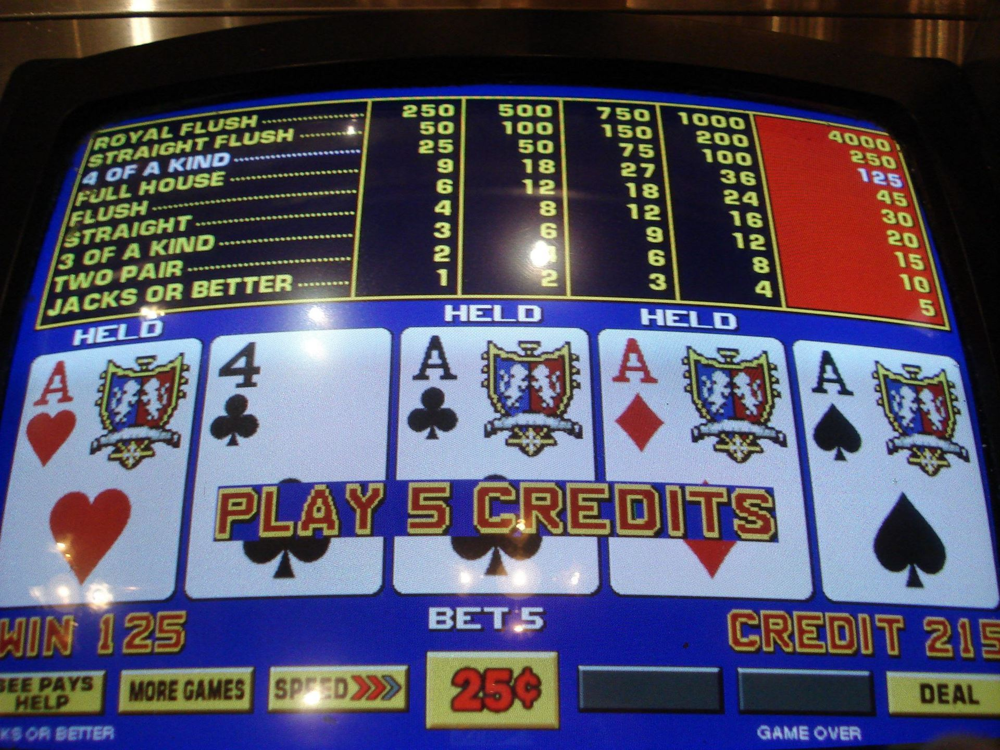
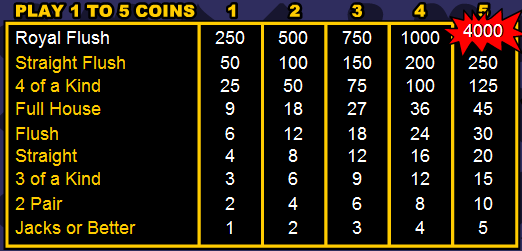
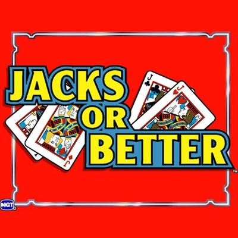
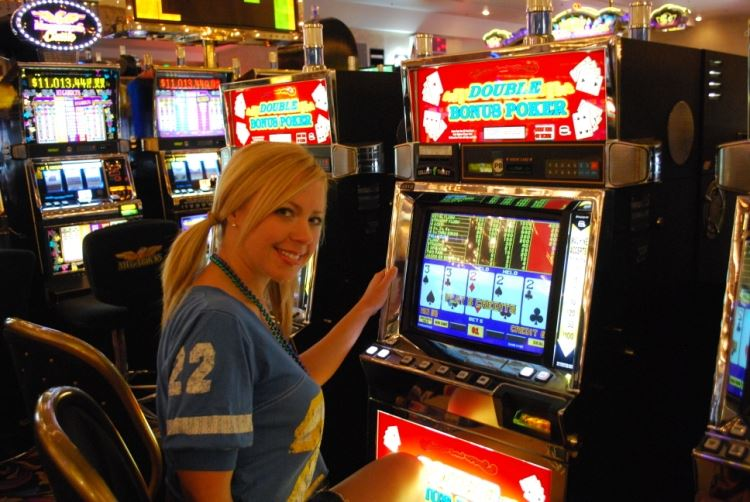
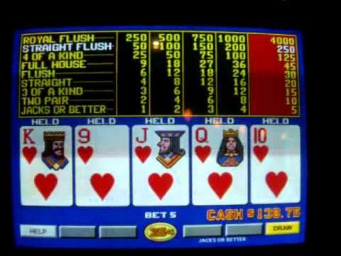

<template>
  <div class="MainContainer">
    <div class="TitleImg center">
      
    </div>
    <div class="single-wide">
      <h1>Video Poker Correct Play and Strategies</h1>
      <p>Video Poker will always be your best option for using free play and reducing the house advantage.  Using the correct strategy charts and choosing the right video poker game can reduce the house advantage to between 0% and 3%, based on the payback schedule.  Video poker offers many options and versions of the game as well as many different pay schedules depending on the particular game, casino and location. Understanding these variables and knowing where the best machines are is half the battle. Playing correct strategy is always recommended.   Open this app and use the strategy chart when sitting at the Video Poker machine to insure that you are choosing the correct mathematical choice. </p>
      
      <p>On this page I've devised what I believe to be the perfect strategy for playing Jacks or Better video poker. By using the charts on this page you can achieve a payout percentage of 99.54% at full pay video poker, which offers the possibility of the highest mathematical return. Please keep in mind that this strategy was created for full pay Jacks or Better games. Choosing a video poker machine with the highest payout is the place to start.  You want to look at the pay schedules and try to chose a game that pays 9 for a full house and 6 for a Flush.  This is often referred to as a 9-6 Payout.  This is one of the best percentage paying returns for the video poker player in any casino.  Again, here at VDF, we are trying to minimize the house advantage on every bet.  Playing a Video Poker machine with the best payout will increase your bankroll and time on the machine.   </p>
      <div class="flex">
        <div class="">
          <b>Here is a full pay Jacks or Better pay table:</b>
        </div>
        
      </div>
      <p>The pay table above assumes you're betting five coins per hand. If you bet less than five coins per hand the royal flush will pay out less, and your return will go down. Also, if you're playing one of the other Jacks or Better pay tables this strategy will still be good, but not perfect. </p>
      <h4>Beginner Jacks or Better Strategy </h4>
      
      <p>If you want to play with decent strategy and increase your odds without following the full chart below, you should follow the rules listed here. We've identified the most troublesome hands for new players, and advised the correct move for each hand. To use this strategy, play your normal game and make the easy decisions, and if you come upon a tough decision refer to the rules below. </p>
      <p>Here is how you should use the chart below: Find your trouble hand on the chart. Follow the chart's recommendation.</p>
      <p>Example: Imagine you have Kc-Qc-Jc-Tc-9c. In this case you have a straight flush, but you also have a royal flush draw. By looking at the chart below, you'll see that a straight flush is better than a royal flush draw, so make sure to keep the straight flush and take your payout. </p>
      <ul>
        <li>Royal Flush Draw vs. Pat Straight Flush » Keep the Straight Flush </li>
        <li>Royal Flush Draw vs. Pat Flush » Keep the Royal Flush Draw </li>
        <li>Pat Straight vs. Four to a Straight Flush » Keep the Straight </li>
        <li>Open Four to a Straight Flush vs. Two Pair » Keep the Four to a Straight Flush </li>
        <li>Inside Four to a Straight Flush vs. Two Pair » Keep the Two Pair </li>
        <li>Four to a Straight Flush vs. High Pair » Keep the Four to a Straight Flush </li>
        <li>High Pair (Jacks or Better) vs. Four to a Flush » Keep the High Pair </li>
        <li>Four to a Flush vs. Four to a Straight » Keep the Four to a Flush </li>
        <li>High Pair (Jacks or Better) vs. Open Four to Straight » Keep the High Pair </li>
        <li>Low Pair (Twos - Tens) vs. Open Four to a Straight » Keep the Low Pair </li>
        <li>Inside Straight Draw vs. Discard All » Keep the Straight Draw </li>
      </ul>
      
      <h4>EXPERT JACKS OR BETTER STRATEGY </h4>
      <p>Here is how you should use the chart below: </p>
      <ol>
        <li>Start at the top of the chart and work down. </li>
        <li>When you see a hand that matches up with yours, follow that strategy. </li>
      </ol>
      <p>Example: Imagine you have Qs-Js-Ts-3s-Jh. In this case, you'd match up with a few rows on the table below. Your hand would qualify for a high pair of Jacks, a Q-J-T suited with one penalty (the other Jack is a penalty card), and four to a flush. However, on the table you'll notice that Q-J-T suited with one penalty is higher than a four flush or a pair, so you should keep the Q-J-T suited and ditch the four flush and pair. </p>
      <h4>Jacks or Better Full Strategy Chart </h4>
      <p>Here are the ranks for every possible Jacks or Better hand you can hold before the draw. Remember, find the highest match on the list for your hand and hold those cards. The middle column shows the expected return for the specific hand. In the example column, h = Hearts, s = Spades, c = Clubs, d = Diamonds, T = Ten, s = Suited. </p>
      <table cellspacing="3" cellpadding="3"><tbody><tr><td><font style="font-size: 16px;">Hand</font></td><td><font style="font-size: 16px;">Expected Return</font></td><td><font style="font-size: 16px;">Example</font></td></tr><tr><td><font style="font-size: 16px;">Pat Royal Flush</font></td><td><font style="font-size: 16px;">800.0000</font></td><td><font style="font-size: 16px;">Th-Jh-Qh-Kh-Ah</font></td></tr><tr><td><font style="font-size: 16px;">Pat Straight Flush</font></td><td><font style="font-size: 16px;">50.0000</font></td><td><font style="font-size: 16px;">6h-7h-8h-9h-Th</font></td></tr><tr><td><font style="font-size: 16px;">Pat Four of a Kind</font></td><td><font style="font-size: 16px;">25.0000</font></td><td><font style="font-size: 16px;">6c-6s-6d-6h-9s</font></td></tr><tr><td><font style="font-size: 16px;">Royal Flush Draw</font></td><td><font style="font-size: 16px;">18.4255</font></td><td><font style="font-size: 16px;">Th-Jh-Qh-Kh-4h</font></td></tr><tr><td><font style="font-size: 16px;">Pat Full House</font></td><td><font style="font-size: 16px;">9.0000</font></td><td><font style="font-size: 16px;">Ac-Ad-As-Js-Jc</font></td></tr><tr><td><font style="font-size: 16px;">Pat Flush</font></td><td><font style="font-size: 16px;">6.0000</font></td><td><font style="font-size: 16px;">Ac-Jc-6c-5c-4c</font></td></tr><tr><td><font style="font-size: 16px;">Three of a Kind</font></td><td><font style="font-size: 16px;">4.3080</font></td><td><font style="font-size: 16px;">8c-8s-8d-9h-3d</font></td></tr><tr><td><font style="font-size: 16px;">Pat Straight</font></td><td><font style="font-size: 16px;">4.0000</font></td><td><font style="font-size: 16px;">4c-5s-6h-7h-8h</font></td></tr><tr><td><font style="font-size: 16px;">Open Straight Flush Draw</font></td><td><font style="font-size: 16px;">3.4809</font></td><td><font style="font-size: 16px;">4c-5c-6c-7c-Th</font></td></tr><tr><td><font style="font-size: 16px;">Two Pair</font></td><td><font style="font-size: 16px;">2.5957</font></td><td><font style="font-size: 16px;">3c-3s-4d-4h-Ac</font></td></tr><tr><td><font style="font-size: 16px;">Inside Straight Flush Draw</font></td><td><font style="font-size: 16px;">2.2766</font></td><td><font style="font-size: 16px;">Qs-Js-9s-8s-4c</font></td></tr><tr><td><font style="font-size: 16px;">High Pair (Jacks or Better)</font></td><td><font style="font-size: 16px;">1.5405</font></td><td><font style="font-size: 16px;">Ac-Ad-Js-8c-5h</font></td></tr><tr><td><font style="font-size: 16px;">K-Q-J suited (w/ no penalty*)</font></td><td><font style="font-size: 16px;">1.5328</font></td><td><font style="font-size: 16px;">Kh-Qh-Jh-4c-3c</font></td></tr><tr><td><font style="font-size: 16px;">Q-J-T suited (w/ no penalty*)</font></td><td><font style="font-size: 16px;">1.5291</font></td><td><font style="font-size: 16px;">Qh-Jh-Th-4d-3d</font></td></tr><tr><td><font style="font-size: 16px;">Q-J-T suited (w/ one Straight penalty*)</font></td><td><font style="font-size: 16px;">1.5116</font></td><td><font style="font-size: 16px;">Qh-Jh-Th-Kc-2c</font></td></tr><tr><td><font style="font-size: 16px;">K-Q-J suited (w/ one Straight penalty*)</font></td><td><font style="font-size: 16px;">1.5032</font></td><td><font style="font-size: 16px;">Kh-Qh-Jh-Tc-4c</font></td></tr><tr><td><font style="font-size: 16px;">K-Q-J suited (w/ one Flush penalty*)</font></td><td><font style="font-size: 16px;">1.4829</font></td><td><font style="font-size: 16px;">Kh-Qh-Jh-Js-3s</font></td></tr><tr><td><font style="font-size: 16px;">Q-J-T suited (w/ one Flush penalty*)</font></td><td><font style="font-size: 16px;">1.4792</font></td><td><font style="font-size: 16px;">Qh-Jh-Th-Jc-4s</font></td></tr><tr><td><font style="font-size: 16px;">Q-J-T suited (w/ any two penalties*)</font></td><td><font style="font-size: 16px;">1.4496</font></td><td><font style="font-size: 16px;">Qs-Js-Ts-Kh-Jc</font></td></tr><tr><td><font style="font-size: 16px;">K-Q-J suited (w/ any two penalties*)</font></td><td><font style="font-size: 16px;">1.4385</font></td><td><font style="font-size: 16px;">Kh-Qh-Jh-Jc-Ts</font></td></tr><tr><td><font style="font-size: 16px;">A-K-Qs, A-K-Js, A-Q-Js (w/ no penalty*)</font></td><td><font style="font-size: 16px;">1.4366</font></td><td><font style="font-size: 16px;">Ac-Kc-Jc-2h-3h</font></td></tr><tr><td><font style="font-size: 16px;">K-Q-T suited, K-J-T suited (w/ no penalty*)</font></td><td><font style="font-size: 16px;">1.4329</font></td><td><font style="font-size: 16px;">Kh-Qh-Th-4c-3c</font></td></tr><tr><td><font style="font-size: 16px;">A-K-Qs, A-K-Js, A-Q-Js (w/ one Straight penalty*)</font></td><td><font style="font-size: 16px;">1.4191</font></td><td><font style="font-size: 16px;">Ac-Kc-Qc-Jh-2h</font></td></tr><tr><td><font style="font-size: 16px;">K-Q-Ts, K-J-Ts (w/ one Straight penalty*)</font></td><td><font style="font-size: 16px;">1.4154</font></td><td><font style="font-size: 16px;">Kh-Qh-Th-Jc-2c</font></td></tr><tr><td><font style="font-size: 16px;">A-K-Qs, A-K-Js, A-Q-Js (w/ one Flush penalty*)</font></td><td><font style="font-size: 16px;">1.3867</font></td><td><font style="font-size: 16px;">Ac-Kc-Qc-5c-4s</font></td></tr><tr><td><font style="font-size: 16px;">K-Q-Ts, K-J-Ts (w/ one Flush penalty*)</font></td><td><font style="font-size: 16px;">1.3830</font></td><td><font style="font-size: 16px;">Kc-Qc-Tc-4c-2h</font></td></tr><tr><td><font style="font-size: 16px;">A-K-Qs, A-K-Js, A-Q-Js (w/ two penalties*)</font></td><td><font style="font-size: 16px;">1.3691</font></td><td><font style="font-size: 16px;">Ac-Kc-Qc-Ts-4c</font></td></tr><tr><td><font style="font-size: 16px;">K-Q-T suited, K-J-T suited (w/ two penalties*)</font></td><td><font style="font-size: 16px;">1.3654</font></td><td><font style="font-size: 16px;">Kh-Qh-Th-Jc-Qc</font></td></tr><tr><td><font style="font-size: 16px;">A-K-Ts, A-Q-Ts, A-J-Ts (w/ no penalty*)</font></td><td><font style="font-size: 16px;">1.3367</font></td><td><font style="font-size: 16px;">Ac-Kc-Tc-6h-2h</font></td></tr><tr><td><font style="font-size: 16px;">A-K-Ts, A-Q-Ts, A-J-Ts (w/ one St. penalty*)</font></td><td><font style="font-size: 16px;">1.3080</font></td><td><font style="font-size: 16px;">Ac-Kc-Tc-Jh-2s</font></td></tr><tr><td><font style="font-size: 16px;">A-K-Ts, A-Q-Ts, A-J-Ts (w/ one Flush penalty*)</font></td><td><font style="font-size: 16px;">1.2868</font></td><td><font style="font-size: 16px;">Ac-Kc-Tc-4c-2s</font></td></tr><tr><td><font style="font-size: 16px;">Four to a Flush, Two High Cards</font></td><td><font style="font-size: 16px;">1.2766</font></td><td><font style="font-size: 16px;">Ac-Jc-4c-3c-2h</font></td></tr><tr><td><font style="font-size: 16px;">A-K-Ts, A-Q-Ts, A-J-Ts (w/ two penalties*)</font></td><td><font style="font-size: 16px;">1.2692</font></td><td><font style="font-size: 16px;">Ac-Kc-Tc-Jh-2c</font></td></tr><tr><td><font style="font-size: 16px;">Four to a Flush, One High Card</font></td><td><font style="font-size: 16px;">1.2127</font></td><td><font style="font-size: 16px;">Jc-7c-4c-2c-8s</font></td></tr><tr><td><font style="font-size: 16px;">Four to a Flush, No High Cards</font></td><td><font style="font-size: 16px;">1.1489</font></td><td><font style="font-size: 16px;">9c-7c-4c-2c-8s</font></td></tr><tr><td><font style="font-size: 16px;">Open Four to a Straight (Three High Cards)</font></td><td><font style="font-size: 16px;">0.8723</font></td><td><font style="font-size: 16px;">Kc-Qh-Js-Ts-3h</font></td></tr><tr><td><font style="font-size: 16px;">Pair of Twos through Tens</font></td><td><font style="font-size: 16px;">0.8237</font></td><td><font style="font-size: 16px;">5c-5h-Js-8d-2h</font></td></tr><tr><td><font style="font-size: 16px;">Open Four to a Straight (Two High Cards)</font></td><td><font style="font-size: 16px;">0.7979</font></td><td><font style="font-size: 16px;">Qh-Js-Ts-9c-3h</font></td></tr><tr><td><font style="font-size: 16px;">Open Four to a Straight (One High Card)</font></td><td><font style="font-size: 16px;">0.7447</font></td><td><font style="font-size: 16px;">Js-Ts-9c-8h-3h</font></td></tr><tr><td><font style="font-size: 16px;">Q-J-9 suited</font></td><td><font style="font-size: 16px;">0.7280</font></td><td><font style="font-size: 16px;">Qc-Jc-9c-4h-3h</font></td></tr><tr><td><font style="font-size: 16px;">J-T-9 suited</font></td><td><font style="font-size: 16px;">0.7216</font></td><td><font style="font-size: 16px;">Jc-Tc-9c-4h-3h</font></td></tr><tr><td><font style="font-size: 16px;">Open Four to a Straight (No High Cards)</font></td><td><font style="font-size: 16px;">0.6809</font></td><td><font style="font-size: 16px;">Ts-9c-8h-7c-3h</font></td></tr><tr><td><font style="font-size: 16px;">Q-J-8 suited</font></td><td><font style="font-size: 16px;">0.6348</font></td><td><font style="font-size: 16px;">Qc-Jc-8c-6h-4h</font></td></tr><tr><td><font style="font-size: 16px;">Three to a Straight Flush, Open, No High Cards</font></td><td><font style="font-size: 16px;">0.6300</font></td><td><font style="font-size: 16px;">4c-5c-6c-Th-9h</font></td></tr><tr><td><font style="font-size: 16px;">K-Q-9 suited, K-J-9 suited</font></td><td><font style="font-size: 16px;">0.6253</font></td><td><font style="font-size: 16px;">Kc-Qc-9c-4h-2h</font></td></tr><tr><td><font style="font-size: 16px;">Q-J suited (w/ no penalty*)</font></td><td><font style="font-size: 16px;">0.6245</font></td><td><font style="font-size: 16px;">Qc-Jc-4h-8s-2h</font></td></tr><tr><td><font style="font-size: 16px;">Q-T-9 suited, J-T-8 suited, J-9-8 suited</font></td><td><font style="font-size: 16px;">0.6189</font></td><td><font style="font-size: 16px;">Jc-9c-8c-4h-3h</font></td></tr><tr><td><font style="font-size: 16px;">Q-J suited (w/ one penalty*)</font></td><td><font style="font-size: 16px;">0.6079</font></td><td><font style="font-size: 16px;">Qc-Jc-4c-8s-2h</font></td></tr><tr><td><font style="font-size: 16px;">K-Q suited, K-J suited (w/ no penalty*)</font></td><td><font style="font-size: 16px;">0.6063</font></td><td><font style="font-size: 16px;">Kc-Qc-8s-4h-2s</font></td></tr><tr><td><font style="font-size: 16px;">Q-J suited (w/ two penalties*)</font></td><td><font style="font-size: 16px;">0.6000</font></td><td><font style="font-size: 16px;">Qs-Js-Th-6c-4s</font></td></tr><tr><td><font style="font-size: 16px;">A-K-Q-J</font></td><td><font style="font-size: 16px;">0.5938</font></td><td><font style="font-size: 16px;">Ac-Ks-Jh-Ts-3s</font></td></tr><tr><td><font style="font-size: 16px;">Q-J suited (w/ three penalties*)</font></td><td><font style="font-size: 16px;">0.5902</font></td><td><font style="font-size: 16px;">Qs-Js-Tc-8c-2s</font></td></tr><tr><td><font style="font-size: 16px;">K-Qs, K-Js (w/ one Flush penalty*)</font></td><td><font style="font-size: 16px;">0.5896</font></td><td><font style="font-size: 16px;">Ks-Qs-8s-6h-2h</font></td></tr><tr><td><font style="font-size: 16px;">K-Qs, K-Js (w/ one or two Straight penalties*)</font></td><td><font style="font-size: 16px;">0.5888</font></td><td><font style="font-size: 16px;">Ks-Qs-Jc-9c-2h</font></td></tr><tr><td><font style="font-size: 16px;">A-Ks, A-Qs, A-Js (w/ no penalty*)</font></td><td><font style="font-size: 16px;">0.5880</font></td><td><font style="font-size: 16px;">Ac-Kc-6s-9d-2h</font></td></tr><tr><td><font style="font-size: 16px;">K-Qs, K-Js (w/ 1 St. penalty + 1 Flush penalty*)</font></td><td><font style="font-size: 16px;">0.5847</font></td><td><font style="font-size: 16px;">Ks-Qs-Tc-6s-4d</font></td></tr><tr><td><font style="font-size: 16px;">A-Ks, A-Qs, A-Js (w/ one Straight penalty*)</font></td><td><font style="font-size: 16px;">0.5794</font></td><td><font style="font-size: 16px;">As-Ks-Tc-2h-6h</font></td></tr><tr><td><font style="font-size: 16px;">K-Qs, K-Js (w/ three penalties*)</font></td><td><font style="font-size: 16px;">0.5721</font></td><td><font style="font-size: 16px;">Ks-Qs-Th-Td-2s</font></td></tr><tr><td><font style="font-size: 16px;">A-Ks, A-Qs, A-Js (w/ one or two penalties*)</font></td><td><font style="font-size: 16px;">0.5714</font></td><td><font style="font-size: 16px;">Ac-Kc-5c-2h-3h</font></td></tr><tr><td><font style="font-size: 16px;">3 to a St. Flush, 2 Gaps, 1 High Card</font></td><td><font style="font-size: 16px;">0.5375</font></td><td><font style="font-size: 16px;">8h-Th-Qh-9c-2s</font></td></tr><tr><td><font style="font-size: 16px;">Four to a Straight, Inside, Three High Cards</font></td><td><font style="font-size: 16px;">0.5319</font></td><td><font style="font-size: 16px;">Qc-Js-Ts-8d-2h</font></td></tr><tr><td><font style="font-size: 16px;">3 to a St. Flush, 1 Gap, 0 Hi Cards</font></td><td><font style="font-size: 16px;">0.5301</font></td><td><font style="font-size: 16px;">4h-5h-7h-9c-Tc</font></td></tr><tr><td><font style="font-size: 16px;">3 to a St. Flush, 2 Gaps, 1 Hi Card, 1 St. Penalty*</font></td><td><font style="font-size: 16px;">0.5227</font></td><td><font style="font-size: 16px;">Jc-9c-7c-8s-2s</font></td></tr><tr><td><font style="font-size: 16px;">J-T suited (w/ no penalty*)</font></td><td><font style="font-size: 16px;">0.5153</font></td><td><font style="font-size: 16px;">Jc-Tc-6s-4d-2d</font></td></tr><tr><td><font style="font-size: 16px;">K-Q-J</font></td><td><font style="font-size: 16px;">0.5153</font></td><td><font style="font-size: 16px;">Kh-Qs-Jc-4c-2h</font></td></tr><tr><td><font style="font-size: 16px;">Q-J</font></td><td><font style="font-size: 16px;">0.5038</font></td><td><font style="font-size: 16px;">Qc-Jh-7d-5c-2h</font></td></tr><tr><td><font style="font-size: 16px;">J-T suited (w/ one Flush penalty*)</font></td><td><font style="font-size: 16px;">0.4987</font></td><td><font style="font-size: 16px;">Js-Ts-6s-4c-2h</font></td></tr><tr><td><font style="font-size: 16px;">K-Q, K-J (w/ no Straight penalty*)</font></td><td><font style="font-size: 16px;">0.4940</font></td><td><font style="font-size: 16px;">Ks-Qc-8h-5h-3d</font></td></tr><tr><td><font style="font-size: 16px;">J-T suited (w/ one or two Straight penalties*)</font></td><td><font style="font-size: 16px;">0.4929</font></td><td><font style="font-size: 16px;">Js-Ts-8c-7c-2h</font></td></tr><tr><td><font style="font-size: 16px;">K-Q, K-J (w/ one or more Straight penalties*)</font></td><td><font style="font-size: 16px;">0.4901</font></td><td><font style="font-size: 16px;">Kc-Qs-9d-5h-2c</font></td></tr><tr><td><font style="font-size: 16px;">Q-T suited (w/ no Flush penalties*)</font></td><td><font style="font-size: 16px;">0.4873</font></td><td><font style="font-size: 16px;">Qc-Tc-7s-5h-2s</font></td></tr><tr><td><font style="font-size: 16px;">J-Ts (w/ 1 Straight penalty + 1 Flush penalty*)</font></td><td><font style="font-size: 16px;">0.4841</font></td><td><font style="font-size: 16px;">Js-Ts-8c-2s-5h</font></td></tr><tr><td><font style="font-size: 16px;">J-T suited (w/ three penalties*)</font></td><td><font style="font-size: 16px;">0.4790</font></td><td><font style="font-size: 16px;">Js-Ts-7c-Ad-2s</font></td></tr><tr><td><font style="font-size: 16px;">AK, AQ, AJ</font></td><td><font style="font-size: 16px;">0.4783</font></td><td><font style="font-size: 16px;">Ac-Ks-8s-7c-2h</font></td></tr><tr><td><font style="font-size: 16px;">Jack (w/ no flush penalty*)</font></td><td><font style="font-size: 16px;">0.4769</font></td><td><font style="font-size: 16px;">Jd-9s-7c-4h-2h</font></td></tr><tr><td><font style="font-size: 16px;">K-T suited (w/ no flush penalty*)</font></td><td><font style="font-size: 16px;">0.4715</font></td><td><font style="font-size: 16px;">Kc-Tc-7s-5d-2d</font></td></tr><tr><td><font style="font-size: 16px;">Q-T suited (w/ one flush penalty*)</font></td><td><font style="font-size: 16px;">0.4698</font></td><td><font style="font-size: 16px;">Qc-Tc-7c-5h-2h</font></td></tr><tr><td><font style="font-size: 16px;">Queen</font></td><td><font style="font-size: 16px;">0.4680</font></td><td><font style="font-size: 16px;">Qc-9d-7d-4s-2s</font></td></tr><tr><td><font style="font-size: 16px;">King (w/ no flush penalty*)</font></td><td><font style="font-size: 16px;">0.4663</font></td><td><font style="font-size: 16px;">Kc-9h-8d-4s-2s</font></td></tr><tr><td><font style="font-size: 16px;">Jack (w/ one or more Flush penalties*)</font></td><td><font style="font-size: 16px;">0.4650</font></td><td><font style="font-size: 16px;">Jd-8d-5d-3s-2s</font></td></tr><tr><td><font style="font-size: 16px;">Ace (w/ no flush penalty*)</font></td><td><font style="font-size: 16px;">0.4635</font></td><td><font style="font-size: 16px;">Ad-Tc-7s-4s-2h</font></td></tr><tr><td><font style="font-size: 16px;">K-Ts (w/ one Flush penalty*)</font></td><td><font style="font-size: 16px;">0.4622</font></td><td><font style="font-size: 16px;">Kc-Tc-8c-5h-2s</font></td></tr><tr><td><font style="font-size: 16px;">King (w/ one or more Flush penalties*)</font></td><td><font style="font-size: 16px;">0.4619</font></td><td><font style="font-size: 16px;">Kh-Ts-8d-5h-2c</font></td></tr><tr><td><font style="font-size: 16px;">Ace (w/ one or more flush penalties*)</font></td><td><font style="font-size: 16px;">0.4579</font></td><td><font style="font-size: 16px;">Ah-Th-7s-5c-2d</font></td></tr><tr><td><font style="font-size: 16px;">3 to a St. Flush, 2 Gaps, No Hi Cards</font></td><td><font style="font-size: 16px;">0.4376</font></td><td><font style="font-size: 16px;">5h-7h-9h-2d-3d</font></td></tr><tr><td><font style="font-size: 16px;">Everything Else » Draw Five New Cards</font></td><td><font style="font-size: 16px;">0.3598</font></td><td><font style="font-size: 16px;">10s-8c-6d-4s-2h</font></td></tr></tbody></table>
      
      <h3>Video Poker strategies and payback percentages </h3>
      <p>Choose the game you want to play and click on the link for the optimal strategy for that game. </p>
      <ul style="font-size: 16px;"><li><font face="inherit"><a href="https://wizardofodds.com/games/video-poker/strategy/jacks-or-better/9-6/simple/" target="_blank"><font color="#c03237" face="inherit">9-6 Jacks or Better simple strategy</font></a>&nbsp;(99.46%)</font></li><li><font face="inherit"><a href="https://wizardofodds.com/games/video-poker/strategy/jacks-or-better/9-6/intermediate/" target="_blank"><font color="#c03237" face="inherit">9-6 Jacks or Better intermediate strategy</font></a>&nbsp;(99.52%)</font></li><li><font face="inherit"><a href="https://wizardofodds.com/games/video-poker/strategy/jacks-or-better/9-6/optimal/" target="_blank"><font color="#c03237" face="inherit">9-6 Jacks or Better optimal strategy</font></a>&nbsp;(99.54%)</font></li><li><font face="inherit"><a href="https://wizardofodds.com/games/video-poker/strategy/jacks-or-better/9-5/" target="_blank"><font color="#c03237" face="inherit">9/5 Jacks or Better</font></a>&nbsp;(98.44%)</font></li><li><font face="inherit"><a href="https://wizardofodds.com/games/video-poker/strategy/jacks-or-better/8-6/" target="_blank"><font color="#c03237" face="inherit">8/6 Jacks or Better</font></a>&nbsp;(98.39%)</font></li><li><a href="https://wizardofodds.com/games/video-poker/strategy/deuces-wild/not-so-ugly-ducks/" target="_blank"><font face="inherit"><font color="#c03237" face="inherit">"Not So Ugly Ducks" (Deuces Wild) intermediate strategy</font></font></a></li><li><font face="inherit"><a href="https://wizardofodds.com/games/video-poker/strategy/deuces-wild/full-pay/simple/" target="_blank"><font color="#c03237" face="inherit">Full-Pay Deuces Wild simple strategy</font></a>&nbsp;(100.71%)</font></li><li><font face="inherit"><a href="https://wizardofodds.com/games/video-poker/strategy/deuces-wild/full-pay/optimal/" target="_blank"><font color="#c03237" face="inherit">Full-Pay Deuces Wild optimal strategy</font></a>&nbsp;(100.76%)</font></li><li><font face="inherit"><a href="https://wizardofodds.com/games/video-poker/strategy/deuces-wild/20-12-9-5-3-2/" target="_blank"><font color="#c03237" face="inherit">20-12-9 Deuces Wild</font></a>&nbsp;(98.94%)</font></li><li><font face="inherit"><a href="https://wizardofodds.com/games/video-poker/strategy/bonus-deuces-wild/9-4-4/" target="_blank"><font color="#c03237" face="inherit">9/4/4 Bonus Deuces</font></a>&nbsp;(99.45%)</font></li><li><font face="inherit"><a href="https://wizardofodds.com/games/video-poker/strategy/bonus-deuces-wild/13-4-3/" target="_blank"><font color="#c03237" face="inherit">13/4/3 Bonus Deuces</font></a>&nbsp;(98.80%)</font></li><li><a href="https://wizardofodds.com/games/video-poker/strategy/bonus-poker/8-5/" target="_blank"><font face="inherit"><font color="#c03237" face="inherit">8/5 Bonus Poker basic strategy</font></font></a></li><li><font face="inherit"><a href="https://wizardofodds.com/games/video-poker/strategy/bonus-poker-deluxe/9-6/" target="_blank"><font color="#c03237" face="inherit">9/6 Bonus Poker Deluxe</font></a>&nbsp;(99.64%)</font></li><li><font face="inherit"><a href="https://wizardofodds.com/games/video-poker/strategy/double-bonus/10-7/" target="_blank"><font color="#c03237" face="inherit">10/7 Double Bonus basic strategy</font></a>&nbsp;(100.17%)</font></li><li><font face="inherit"><a href="https://wizardofodds.com/games/video-poker/strategy/double-bonus/9-7-5/" target="_blank"><font color="#c03237" face="inherit">9/7/5 Double Bonus basic strategy</font></a>&nbsp;(99.11%)&nbsp;</font></li><li><font face="inherit"><a href="https://wizardofodds.com/games/video-poker/strategy/double-double-bonus/9-6/" target="_blank"><font color="#c03237" face="inherit">10/6 Double Double Bonus</font></a>&nbsp;(100.07%)&nbsp;</font></li><li><font face="inherit"><a href="https://wizardofodds.com/games/video-poker/strategy/double-double-bonus/9-6/" target="_blank"><font color="#c03237" face="inherit">9/6 Double Double Bonus</font></a>&nbsp;(98.98%)&nbsp;</font></li><li><font face="inherit"><a href="https://wizardofodds.com/games/video-poker/strategy/super-aces/8-5/" target="_blank"><font color="#c03237" face="inherit">8/5 Super Aces Bonus Poker optimal strategy</font></a>&nbsp;(99.94%)</font></li></ul>

      <h3>TOP TEN PLACES TO PLAY VIDEO POKER IN VEGAS </h3>
      <ol>
        <li>Four Queens Hotel & Casino Las Vegas, NV  </li>
        <li>Palms Casino Resort Las Vegas, NV  </li>
        <li>Gold Coast Hotel & Casino Las Vegas, NV  </li>
        <li>Cosmopolitan of Las Vegas Las Vegas, NV  </li>
        <li>D Las Vegas Casino Las Vegas, NV  </li>
        <li>Sam's Town Las Vegas Las Vegas, NV </li>
        <li>Aliante Casino North Las Vegas, NV  </li>
        <li>South Point Casino Las Vegas, NV  </li>
        <li>Main Street Station Casino, Brewery and Hotel  Las Vegas, NV  </li>
        <li>Bellagio Las Vegas Las Vegas, NV  </li>
      </ol>
    </div>
  </div>
</template>
